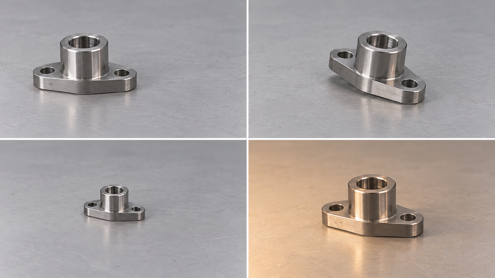

Start with a 1D signal: the kernel w = [−1, 0, 1] is placed over three neighbouring inputs, gives one output, and then moves one cell to the right.
The window moves left to right, then down by one row. Each position fills one cell of the output; the kernel never changes.
conv = nn.Conv2d(in_channels=3, out_channels=32,
kernel_size=3, stride=2, padding=1)
x.shape # (N, 3, 128, 128)
conv(x).shape # (N, 32, 64, 64) ⌊(128+2−3)/2⌋+1 = 64
conv.weight.shape # (32, 3, 3, 3)
conv.bias.shape # (32,)| layer | output shape | parameters | receptive field | jump |
|---|---|---|---|---|
| input | 3 × 128 × 128 | – | 1 | 1 |
| conv 3 × 3, S = 2 | 32 × 64 × 64 | 3·9·32 + 32 = 896 | 3 | 2 |
| conv 3 × 3, S = 2 | 64 × 32 × 32 | 32·9·64 + 64 = 18 496 | 7 | 4 |
| conv 3 × 3, S = 2 | 128 × 16 × 16 | 64·9·128 + 128 = 73 856 | 15 | 8 |
| global average pool | 128 | – | whole image | |
| linear | 10 | 128·10 + 10 = 1 290 | ||
| total | 94 538 |
Every number follows from the formulas of Part 2. BatchNorm adds 2C learnable values per block (omitted).